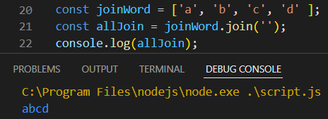

slice a sentence
উপরের এই sentance টাকে যদি অনেক অংশে ভাগ করতে চাই তবে নিছের নিয়মে করতে হবে ।
এখানে empty string টা দেয়ার কারন হল , এই string এর মধ্যে যেখানে যেখানে space আছে সেখানে একটা একটা ভাগ করে ফেলবে ।

এখানে empty string এর জায়গায় যদি o দেওয়া হত তবে , সেটা string এর মধ্যে যেখানে যেখানে o থাকবে সেখানে সেখানে একটা একটা গ্যাপ করে ফেলবে ।

slice
slice এর সাহায্যে বলে দিতে হয় যে array index এর কোথা থেকে শুরু করে কথায় পর্যন্ত কেটে একটা slice করতে হবে ।

এ ক্ষেত্রে index টা শুরু হবে ঠিক জায়গায় তবে শেষ হবে এক index আগে ।
substr
subSrt মানে হল আম কোন index থেকে শুরু করবো এবং আমার কয়টা index পর্যন্ত দরকার ।
subString
এটার ক্ষেত্রে প্রথম index থেকে শুরু হবে এবং শেষের index এর আগের index এ শেষ হবে ।
join
এটা ব্যেবহার করা হয় একটা array এর মদ্যে থাকা cheracter গুলা কে একসাথে যোগ করার ক্ষেত্রে ।
 মাজখানে কিছু দিবে না , যেহেতু perameter এ কিছু নাই ।
মাজখানে space দিবে , যেহেতু perameter এ space আছে ।